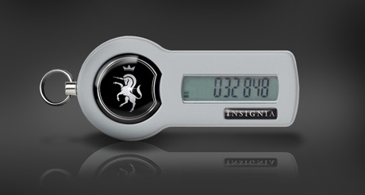

SecurID Frequently Asked Questions
Below are commonly asked questions about SecurID Tokens. If your question is not shown below or you need additional information, please contact our 24-hour phone support: +44 800 377 70 77 / +7 915 470 70 77
General Questions
- What is a RSA SecurID Token?
- How do I activate my RSA SecurID Token?
- Why do I need an RSA SecurID Token?
- What do I do if I lose my RSA SecurID Token?
- What is the difference between PIN, tokencode and PASSCODE?
- Where do I go to get my RSA SecurID Token?
- What do I do if I forget my PIN?
- What do I do if I forget my RSA SecurID Token at home?
- What if my RSA SecurID Token isn’t working?
- What do I do if my RSA SecurID Token is damaged?
- What do I do if I believe my PIN is compromised?
- How many times can I attempt to log in before the system locks me out?
- I am leaving the university. Who do I turn my token into?
- Why am I being sent to the login prompt when attempting to login?
Managers/Human Resource Specialist
- What happens to the token when an employee terminates?
- Who do I report new hires, transfers, terminations, or retirements to?
- Am I responsible for recovering the token from employees leaving the university or my department/unit?
General Questions
What is a RSA SecurID Token?
The RSA SecurID Token is the second component of the two-factor authentication system that is being installed on critical information systems. The token itself has a series of six numbers (tokencode) that changes every 60 seconds, and is used in conjunction with your alpha-numeric PIN code when you log into a system.
How do I activate my RSA SecurID Token?
To activate your RSA SecurID token go to http://security.georgetown.edu/securid/, and click on “Activate my RSA SecurID Token”, and follow the directions.
Why do I need an RSA SecurID Token?
The system that you have access houses very sensitive University information. This information is very important, and access to the information needs more secure authentication than a password by itself can provide.
What do I do if I lose my RSA SecurID Token?
You must call the UIS Helpdesk at (202) 678-4949 and report the token lost. Then, request a new token from the web site.
What is the difference between PIN, tokencode and PASSCODE?
The terminology can be very confusing. With two-factor authentication there are two components that a user needs in order to authenticate. The two factors are “something the user has – RSA Token which displays a tokencode” and “something the user knows - PIN”.
The PASSCODE is a combination of the user’s PIN followed by the tokencode. For example, if your PIN is abc1234 and the current tokencode is 987654, your PASSCODE is abc1234987654.
Where do I go to get my RSA SecurID Token?
After your RSA SecurID Token has been provisioned, a representative from the UIS Helpdesk will contact you to let you know where you can get your token.
What do I do if I forget my PIN?
Navigate to http://security.georgetown.edu/securid/ web site, and click on “Troubleshooting”. The next screen will ask you to authenticate using your NetID and password, then select the SecurID Token credential, and select “I forgot my PIN”. The next page will let your choose a new PIN and will test your Token.
What do I do if I forget my RSA SecurID Token at home?
Navigate to http://security.georgetown.edu/securid/ web site, and click on “Troubleshooting”. The next screen will ask you to authenticate using your NetID and password, then select the SecurID Token credential, and select “Token is temporarily unavailable or misplaced”. The next page will display a tokencode which will be valid for 7 days. Record the temporary tokencode in a safe location and use it instead of the digits displayed on your RSA SecurID token. The temporary code will be invalidated as soon as you login with your RSA SecurID tokencode.
What if my RSA SecurID Token isn’t working?
Please contact the UIS Helpdesk for assistance at (202) 687-4949 or via email at help@georgetown.edu.
What do I do if my RSA SecurID Token is damaged?
If your token is damaged and is unreadable, you must get a replacement. Please contact the UIS Helpdesk at (202) 687-4949 or via email at help@georgetown.edu.
What do I do if I believe my PIN is compromised?
If you believe that your PIN is compromised immediately report it to the UIS Helpdesk at (202) 687-4949 or via email at help@georgetown.edu and navigate to http://security.georgetown.edu/securid/ web site, and click on “Manage your RSA SecurID Token”. After you authenticate click on “Change PIN” to change your PIN.
How many times can I attempt to log in before the system locks me out?
The system will automatically lock you out after 10 unsuccessful authentication attempts. Navigate to http://security.georgetown.edu/securid/ web site, and click on “Manager your RSA SecurID Token”. The next screen will ask you to authenticate using your NetID and password, and to enter your Passcode. After you have successfully logged in, the system will prompt you to enter your tokencode again. If this fails, please contact the UIS Helpdesk at (202) 687-4949 or via email at help@georgetown.edu for further assistance.
I am leaving the university. Who do I turn my token into?
When leaving Georgetown University please return your RSA SecurID token to the UIS Help Desk or to your Manager/HR Specialist.
Why am I being sent to the login prompt when attempting to login?
If the system you are trying to authenticate sends you back to the authentication prompt it means that a part of your authentication was no successful. Please wait for your tokencode to change and try to authenticate again.
Managers/Human Resource Specialists
What happens to the token when an employee terminates?
When the token is turned in to UIS Helpdesk, it is de-assigned from the current user, and reassigned to a different user.
Who do I report new hires, transfers, terminations, or retirements to?
New hires should request a new token from the web site, or the hiring manager may also request a token for this user from the web site. Transferred, terminated, and retired employees should return the token to you, and you should send an e-mail to help@georgetown.edu indicating that the token should be disabled. The token is to be turned in to the UIS Helpdesk as soon as possible.
Am I responsible for recovering the token from employees leaving the university or my department/unit?
Yes. Tokens should be treated the same as keys. Please collect the token when the employee leaves the university or department/unit.
